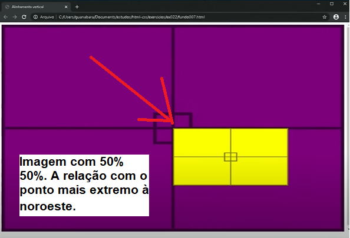

[position] e [transform]
Página inicial
[position] - relative e absolute
Para usar esse comando tenho que estabelecer a relação relativa e absoluta.
O bloco que contem o bloco menor será a posição relativa.
O bloco contido será o de posição absoluta.
Após definir esses parâmetros podemos ir no bloco com posição absoluta e marcar "top" e "left" dele em relação ao bloco relativo.
#container{
position: relative;
}
#conteudo{
position: absolute;
top: 10px;
left: 30px;
}
top e left - %
IMPORTANTE - essa distância que são marcadas em pixel ou % são em ao ponto mais extremo ao noroeste do bloco.
Por isso ao colocar top: 50% e left: 50%, o conteúdo não irá centralizar dentro do container. A imagem abaixo mostra como ficaria o bloco com esse tipo de centralização.
#container{
position: relative;
}
#conteudo{
position: absolute;
top: 50%;
left: 50%;
}

[transform]
translate
O transform translate serve para eu mudar essa posição padrão que deixa a ponta na região 50% 50% do bloco relativo.
#container{
position: relative;
}
#conteudo{
position: absolute;
top: 50%;
left: 50%;
transform: translate (-50%, -50%);
}
Se for 50% do que foi movido será a matedade, por isso centraliza.